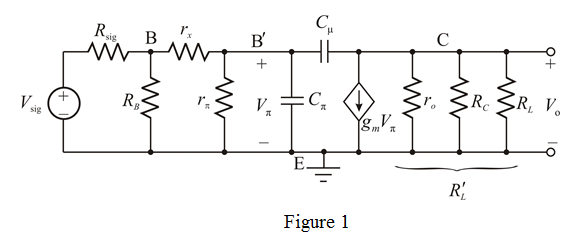
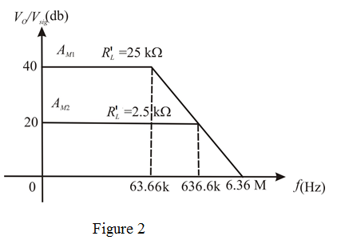

(b)
The upper  frequency is,
frequency is,
Where,
If then, . The upper  frequency becomes,
frequency becomes,
If then above equation becomes,
If  then above equation becomes,
then above equation becomes,
Therefore, the upper  frequency is.
frequency is.
Refer to the Figure 9.4 (a) in the text book.
Draw the equivalent circuit for the common-emitter amplifier as shown in Figure 1:

(a)
Write the expression of midband gain.
If then then,
Therefore, the midband gain is.
(b)
The upper frequency is,
Where,
If then, . The upper frequency becomes,
If then above equation becomes,
If then above equation becomes,
Therefore, the upper frequency is.
The gain-bandwidth product is,
Therefore, the gain-bandwidth product is.
If and then the gain-bandwidth product becomes
Therefore, the gain-bandwidth product is.
Case-(i)
If then
The midband gain is,
Therefore, the midband gain is.
The upper  frequency is,
frequency is,
Therefore, the upper  frequency is.
frequency is.
Case-(ii)
If then
The midband gain is,
Therefore, the midband gain is.
The upper  frequency is,
frequency is,
Therefore, the upper  frequency is
frequency is .
.
Draw the bode plot of shown in Figure 2.
